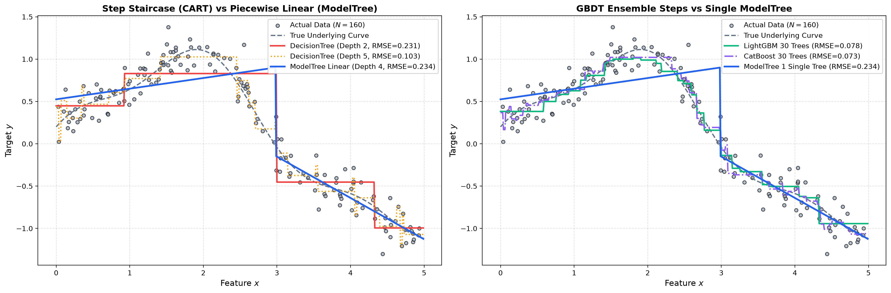
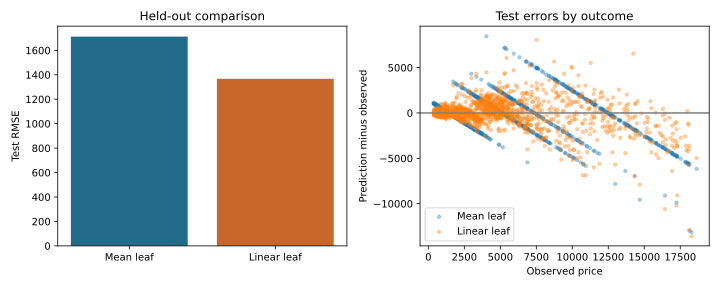

Decision tree regression with linear leaves: a worked diamond price example¶
Consider a 0.95-carat and a 0.99-carat diamond with the same grades. If they reach the same constant leaf, a conventional regression tree predicts the same price for both. A linear leaf can assign different prices inside that region. We can test whether that flexibility improves predictions by changing only the leaf type.
How do constant and linear leaves work?¶
A mean leaf predicts the average training outcome in its region. A linear leaf fits a local equation. For two features, that equation can look like intercept + b1 * carat + b2 * width. Routing still happens first. The tree determines which local equation applies.
The trade-off is fit versus support. A shallow mean tree needs enough splits to approximate a curved price surface. A linear leaf needs enough data to estimate coefficients, particularly when carat and physical dimensions are correlated. Predictions on opposite sides of a split can still jump.
Train both trees on real data¶
Download OpenML diamonds 46923 to datasets/diamonds.parquet. Clone the repo, run uv sync, then run this code from its root. The seed fixes the random split. It keeps 6,000 training and 2,000 test observations. The input carries cut, color and clarity as raw labels.
from statistics import mean
from examples.real_tree_studies import load, rows
from mltreelib import Metrics, ModelTree
df = load("diamonds", 46923).sample(frac=1, random_state=2026)
train, test = df.iloc[:6000], df.iloc[6000:8000]
features = df.columns.drop("price").tolist()
types = ["categorical" if c in {"cut", "color", "clarity"} else "numeric"
for c in features]
x_train, x_test = rows(train, features), rows(test, features)
y_train, y_test = train.price.tolist(), test.price.tolist()
metric = Metrics()
print("global mean", metric.regression(y_test, [mean(y_train)] * len(test))["rmse"])
for leaf in ("mean", "linear"):
tree = ModelTree(leaf=leaf, max_depth=2, min_rows=40, prune="none")
tree.fit(x_train, y_train, col_names=features, dtypes=types)
predicted = tree.predict(x_test)
print(leaf, metric.regression(y_test, predicted)["rmse"])
print(tree.splits()[0], tree.leaves()[0])
Where do the models make mistakes?¶
| Prediction | Test RMSE |
|---|---|
| Global training mean | 3,998 |
| Mean leaves | 1,712 |
| Linear leaves | 1,367 |
Both trees include a split on carat at 0.87. The linear leaves reduced test RMSE by about 20% compared with the mean leaves in this run. The first leaf had 3,582 training records.


The residual plot puts observed price on the horizontal axis and prediction minus observed price on the vertical axis. Large negative values are underestimates. Horizontal bands and repeated patterns can reveal that the model gives common predictions to very different records. A falling cloud at the high end can matter even if the average error improves.
Check support before reading a coefficient. A local carat coefficient describes the fit within a leaf while its other inputs stay fixed. The data may contain few plausible combinations where width stays constant as carat changes. Inspect actual cases and the training range before using the coefficient for a pricing decision.
Does this beat gradient boosting?¶
This experiment compares two leaf types at the same depth and support setting. A comparison with gradient boosting needs the same data split, tuning budget and metrics. Include train time, inference time and failed runs if those matter. Use validation to choose the configuration. A cheaper model can be useful if its residuals are acceptable where the business acts.
For the origin of model trees, see Quinlan, Learning with Continuous Classes (1992). For a controlled missing-data check and a separate real explanation, see the regression pathway.